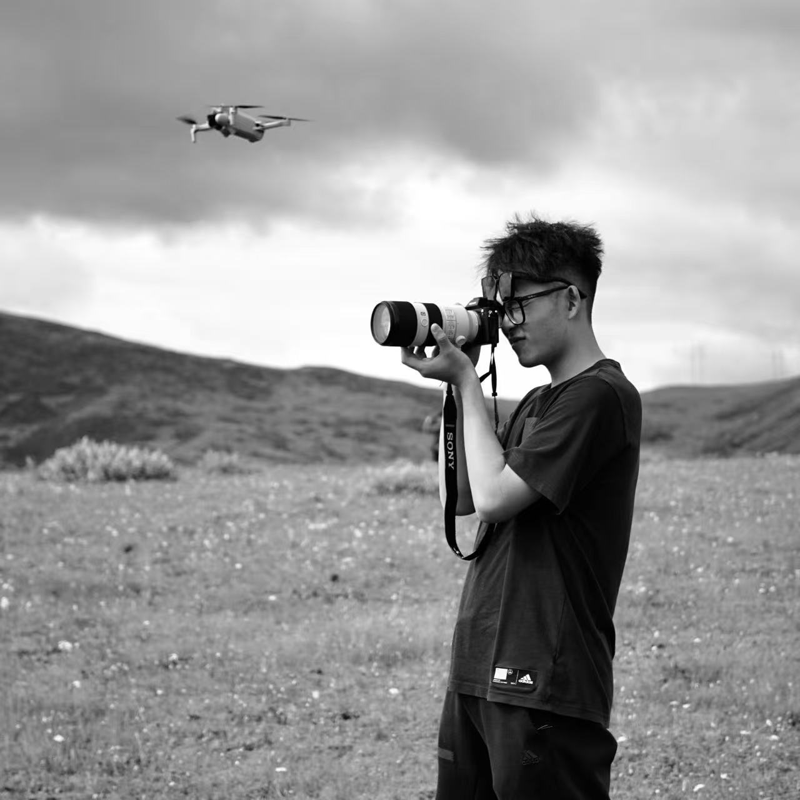

PHOTOGRAPHER / PERSONAL ARCHIVE
Hi, I am LilD
欢迎来到我的个人摄影网站。在这里，我记录街头、故乡、建筑、风光与日常中的瞬间，也用影像整理自己观察世界的方式。
希望这些照片，能让你看到我所看见的片刻。
A personal archive of what I notice, remember, and want to keep.
浏览作品
PERSONAL PHOTOGRAPHY ARCHIVE
精选栏目
按专题、地点与日常观察整理的个人摄影作品。栏目数量由现有数据自动生成。
FIELD NOTE / 拍摄札记
在行走中整理照片
我会拍街头，也会拍旅途中遇到的风景、建筑和动物。题材并不固定，更多时候是先被一个动作、一段光线或人与环境之间的距离吸引，再按下快门。
这个网站按照栏目慢慢整理照片。文字只说明当时看见了什么、为什么留下这一帧，不替画面里的人发言，也不急着给每张照片一个很重的结论。
ABOUT / 关于
一份持续生长的个人摄影档案
这里收录不同阶段的摄影栏目、组图、拍摄札记和单幅解读。新的照片会继续加入，也会保留尚未完成的系列，让整理本身成为拍摄的一部分。
本站照片版权归作者所有，未经许可请勿转载、复制或用于商业用途。
栏目说明